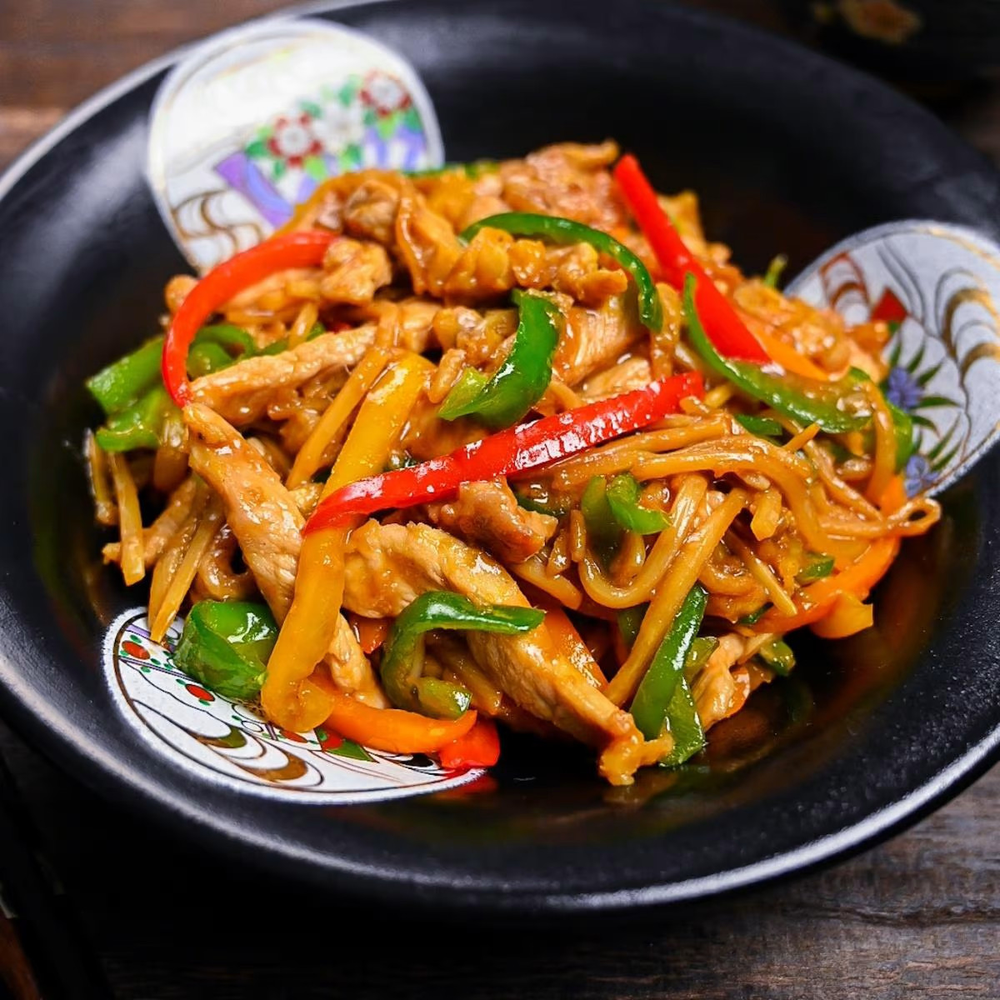

Chinjao Rosu (Japanese Style Pepper Steak Stir Fry)

Description
"Chinjao Rosu" is a delicious Japanese take on the Chinese "pepper steak" stir fry dish. This version can be made using pork or beef and any color of bell pepper. It's so quick and easy to make (cooking time is less than 10 minutes!) yet still packed with flavour.
Ingredients
Chinjao Rosu
- 150g (5oz) bamboo shoots
- 1 (100g) bell peppers (any colour, preferably green)
- 250g (½ lb) pork chops
- ½ (15g) fresh ginger
- 2 cloves garlic
- 2 tbsp sesame oil (for frying)
Marinade
- 1 medium egg
- 2 tbsp corn starch or potato starch
- 2 tsp sake
- 2 pinches salt
- 1 pinch black pepper
- 1 tsp soy sauce
- 1 tsp sesame oil
Sauce
- 2 tbsp oyster sauce
- 1 tbsp soy sauce
- 2 tsp sugar
- 2 tsp Chinese chicken stock powder
- 1 tbsp water
- 1 tsp water + a pinch of corn starch / potato starch
Steps
- First, pound the pork chops until they're about 1cm (a bit less than ½ inch) thick.
- Cut the pork into thin strips, approximately ½ - 1cm thick.
- Take a medium sized bowl and whisk one medium sized egg. Add the pork, sake, salt and soy sauce to the bowl and mix well.
- Add 2 tbsp of corn starch or potato starch to the bowl and mix.
- Add 1 tsp of sesame oil to the bowl and mix. Set aside while preparing the vegetables.
- Cut the pepper, and bamboo shoots into thin 5mm (a little less than ¼ inch) strips.
- Cut the ginger into about 2mm strips.
- Finely chop the garlic cloves into slices.
- In a small separate bowl, mix 2 tbsp oyster sauce, 1 tbsp soy sauce, 2 tsp sugar, 2 tsp chicken stock powder and 1 tbsp of water and mix.
- Mix 1 tsp of water with a pinch of cornstarch and pour it into sauce. Mix well and set aside for later.
- Heat up a pan on medium high and add 1 tbsp of sesame oil.
- Add the contents of the bowl of marinated pork to the pan and fry until the pork is cooked through.
- Transfer the cooked pork to a clean plate and set aside for later.
- Add another tbsp of sesame oil to the pan and add the bamboo shoots. Fry for a few minutes.
- Next, add the bell peppers, ginger and garlic to the pan and stir fry for 2-3 minutes.
- Add the pork back in and mix well.
- Turn off the heat and pour the sauce we made earlier into the pan.
- Mix well and allow the sauce to heat up using the residual heat from the stir fry.
- Serve with rice and enjoy!